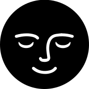

vous souhaite de beaux rêves
La Contragence Spatiale est une maison de micro-éditions poétiques et subversives, née pour protéger les astres, dérouter les satellites et résister à l’instrumentalisation du cosmos. Elle recueille les messages des humains non capitaux, soutient les errances sidérales et publie les voix qui parlent depuis les marges de la gravité.
Elle agit contre la conquête, pour la dérive ; contre les missions, pour les fuites ; contre les empires, pour les constellations dissidentes.
Un projet pour les rêveureuses insurgé·es, les gardien·nes de la lune et les mots qui révolutionnent.
Le ciel n'est pas une limite, c'est un chantier.
[Ton texte ici...]
[Ton texte ici...]
[Ton texte ici...]
[Ton texte ici...]
Une idée ? Une envie de collaber ?
Email : contact@contragence-spatiale.xyz